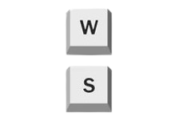

As setas do jogador 1, são as teclas de "w" e "S". W vai para cime e S para baixo.

As setas do jogador 2, são as teclas em conjunto. Mas usando apenas as setinha para cima e para baixo.
OBS:Você não consegue jogar sem antes de colocar os dados dos jogadores e número de partidas!